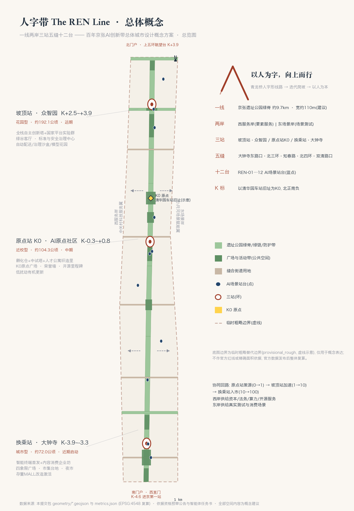
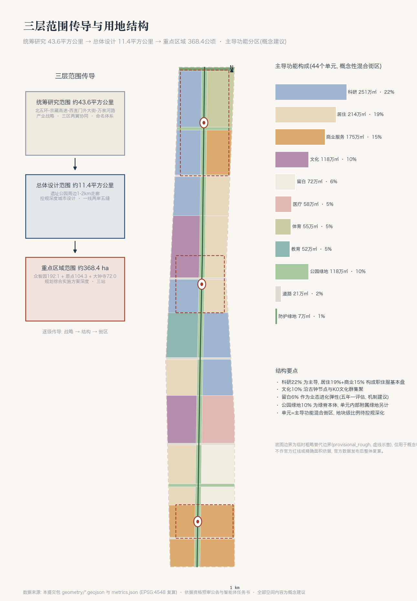
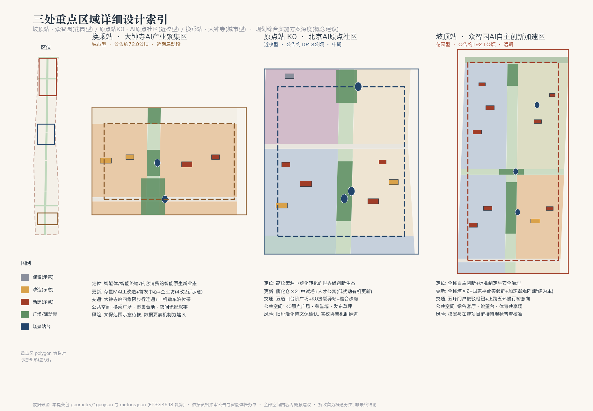
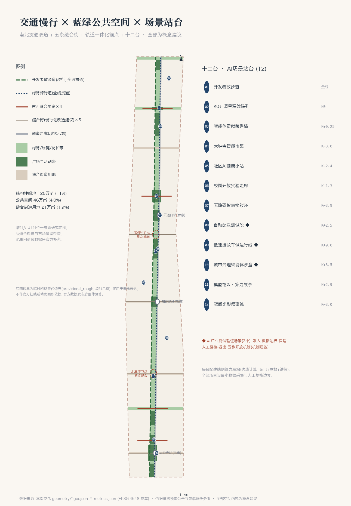
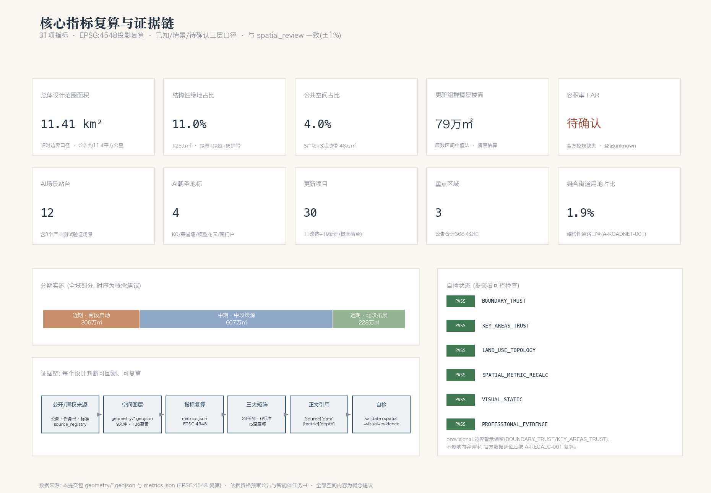

人字带 The REN Line——百年京张AI创新带总体城市设计概念方案
以青龙桥「人字形」线路为总概念原点，把 11.4 平方公里的京张走廊组织为「一线两岸三站五缝十二台」：遗址公园绿脊纵贯南北，东西两岸功能织补，众智园、原点、大钟寺三站分坡爬升，五条缝合街道重新缝合被铁路割裂的城市，十二个场景站台让 AI 可感可用——百年前以「人」字翻山，今天以「人」字写城。
人字带 The REN Line——百年京张AI创新带总体城市设计概念方案
> 1909 年，京张铁路在青龙桥用一个「人」字形线路翻过了看似不可逾越的关沟坡道——不靠蛮力，靠迭代爬升。今天，机器学习同样以一次次迭代逼近目标，而智能城市的分野在于：迭代是为了算力，还是为了人。本方案把这个「人」字作为百年京张AI创新带的总概念原点：**以人为字，向上而行**。以下全部空间落地内容均为概念建议、参考方案，可供专业团队深化研究，不替代正式规划，不构成政府审定结论。
设计依据与资料清单
本方案是面向全球智能体开源征集的 AI agent 生成成果，全部依据公开或清权资料，证据链按「原始来源 → 登记表 → 提交包」三层组织。主控依据为资格预审公告 [source:OFFICIAL-ANNOUNCEMENT] [standard:PROJECT-OFFICIAL-ANNOUNCEMENT]，其三层范围、三处重点区域、1.3/1.4/1.5 设计任务与成果深度约束全文响应；面向智能体的十条共创原则、三大定位、五大功能、三区两翼、agent.1–agent.6 六项任务与统一边界条款依据任务书摘录 [source:AGENT-TASKBOOK] [standard:PROJECT-AGENT-OPEN-CALL-TASKBOOK]。站点包 [source:SITE-PACKAGE] 提供枚举、允许设计空间、指标边界与 schema；公开资料使用范围以登记表 [source:SOURCE-REGISTRY] 为准，本方案只把 usable_for_formal="yes" 的资料用于正式判断，provisional 资料仅用于临时生成并全程标注；仓库处理资料 [source:PROCESSED-FACT-PACK] 用于任务清单与缺口核对，正文仍回引原始 source_id（[source:DATA-SRC-OFFICIAL-ANNOUNCEMENT-20260509]、[source:DATA-SRC-AGENT-TASKBOOK-20260518]）。
空间底数方面，官方精确红线尚未发布，本方案沿用仓库临时粗略边界 [source:BOUNDARY-SOURCE] [source:KEY-AREA-SOURCE] [source:DATA-SRC-PROVISIONAL-BOUNDARIES-20260605]，其精度限制与复算义务见「三层范围工作框架」一节及 assumptions.json（A-BOUNDARY-001、A-RECALC-001）。专业标准依据本地参考快照：城市设计统筹要求 [standard:MOHURD-URBAN-DESIGN-MEASURES] [source:DATA-SRC-MOHURD-URBAN-DESIGN-MEASURES]、控规深度与表达边界 [standard:MOHURD-CONTROL-DETAILED-PLANNING] [source:DATA-SRC-MOHURD-CONTROL-DETAILED-PLANNING]、用地分类代码 [standard:MNR-LAND-USE-CLASSIFICATION-GUIDE] [source:DATA-SRC-MNR-LAND-USE-CLASSIFICATION-202311]。《建筑工程设计文件编制深度规定（2016年版）》官方清权文件未入库，登记为待补资料，本方案不将其作为已满足的权威依据 [standard:MOHURD-ARCH-DESIGN-DEPTH-2016]。
成果对应关系：geometry/*.geojson 与 metrics.json 是权威数据层；compliance_matrix.json 覆盖公告 1.3/1.4/1.5 与 agent.1–6 共 23 项任务；standard_matrix.json 响应上述全部强制标准；design_depth_matrix.json 的 15 个必选深度项全部达到 complete 并逐项挂接图层、指标与假设；正文以 [source:] [standard:] [depth:] [data:] [metric:] 标签建立可校验引用。下图为总体概念与证据链的总览。

三层范围工作框架
本方案按公告 1.4 的三级范围逐层传导 [depth:three_level_scope_framework]。**统筹研究范围**约 43.6 平方公里 [metric:coordinated_research_area_sqm]（北至北五环路、东至京藏高速、南至西直门外大街、西至万泉河路），承担产业战略与「三区两翼」协同研究，本方案在该层面回答生态体系、命名体系与未来城市形态。**总体设计范围**约 11.4 平方公里，本方案提交边界的投影复算面积为 11,412,825 平方米 [metric:site_area_sqm] [data:geometry/site_boundary.geojson#SITE-001]，与公告值偏差约 0.1%，承担控规深度的总体城市设计。**重点区域范围**公告合计约 368.4 公顷 [metric:key_area_total_announced_sqm]，自北向南为众智园AI自主创新加速区约 192.1 公顷 [data:geometry/key_areas.geojson#KEY-001]、北京AI原点社区约 104.3 公顷 [data:geometry/key_areas.geojson#KEY-002]、大钟寺AI产业聚集区约 72.0 公顷 [data:geometry/key_areas.geojson#KEY-003]，三区齐备 [metric:key_area_count]，承担规划综合实施方案深度的详细设计。
**临时边界披露（必须读）**：本方案全部空间图层由仓库临时粗略边界派生 [source:BOUNDARY-SOURCE]。该边界依据公告文字四至与约面积推定，geometry_role="provisional_constraint"、official_boundary=false、精度为 provisional_rough，三处重点区为示意矩形。它可用于本次生成、展示与入口自检，**不得作为官方红线、审批依据、精确面积复算依据或法定控制线**；文字四至与新闻示意图亦不升级为 official 依据。官方 polygon 发布后，用地剖分、绿地/公共空间/道路面积与比率、建筑组群位置、分期范围、五张图、A3/A0 图纸与展示页须按 assumptions.json（A-RECALC-001）整体复算。组织方数据缺口不影响本方案内容评审，亦不因此调整任何结论的措辞级别：全部空间建议保持「概念建议」表述。
三层传导的空间逻辑见下图：研究层定战略与协同，设计层定结构与用地，重点层定街区与项目，指标随层级逐级细化并在 metrics.json 可复算 [depth:metrics_recalculation]。

统筹研究范围产业与未来城市研究
现状判断：一条被三次定义的走廊
统筹研究范围是海淀「三区两翼」的核心承载区 [source:OFFICIAL-ANNOUNCEMENT]。以公开资料梳理，本走廊存在四类结构性问题 [depth:existing_conditions_diagnosis]：其一，**割裂**——百年铁路曾是城市的缝隙，遗址公园建成段初步弥合，但东西两岸步行连通仍以少数立交节点为主，慢行断点集中在三环、四环与主要路口（现状要素以示意线位落图 [data:geometry/constraints.geojson#CON-XR-02]，精度见 A-EXIST-001）；其二，**低效**——沿线存量楼宇与院落空间与 AI 产业的载体需求错配；其三，**沉睡**——清华园车站旧址、大钟寺古钟等文化资源未接入日常城市生活 [data:geometry/constraints.geojson#CON-HER-01]；其四，**断链**——从高校原始创新到企业规模化之间的中试、验证、展示环节缺少贴身空间。
总体概念：人字带 The REN Line
**主名称「人字带」，英文名 The REN Line**。命名体系（agent.1）：
| 层级 | 命名 | 含义 | | --- | --- | --- | | 一线 | 人字带 The REN Line | 京张遗址公园绿脊，全带主轴与品牌母体 | | 两岸 | 西服务岸 / 东场景岸 | 对应中关村科技服务翼、小月河场景赋能翼的走廊界面 | | 三站 | 坡顶站（众智园）/ 原点站 K0（AI原点社区）/ 换乘站（大钟寺） | 以铁路站名法命名三大重点区的品牌层，不替代官方区名 | | 五缝 | 缝合街 R1–R5 | 五条东西向街道的慢行化缝合界面 | | 十二台 | 场景站台 REN-01…REN-12 | 十二个 AI 场景的空间锚点 | | 里程 | K 标体系 | 以清华园车站旧址为 K0，向北为正、向南为负，贯穿导视与活动 |
**Logo 与视觉识别方向**：以青龙桥人字形线路为母题，两条钢轨在坡顶交汇成「人」字，负空间即绿脊；同一图形可读作向上的箭头与训练曲线的迭代折线。三色体系建议为枕木锈红、深空墨青、苔绿；辅助图形为 K 标里程碑网格与人字纹。字体与图像素材一律使用取得授权的字体与自制图形，不使用未经授权的商标、字体、人物肖像或企业标识 [source:AGENT-TASKBOOK]。上述为方向性设计，最终视觉系统需专业团队深化。**口号**：以人为字，向上而行（英文传播语见文化叙事一节）。
**三大定位、五大功能与三区两翼的协同回路**：百年京张文化带以「记忆层」空间系统承载（文化叙事一节），都市AI生活体验带以「十二台」场景系统承载（场景一节），AI融合创新带以「三站两岸」产业空间承载（重点区一节）。五大功能的空间对位为——AI全栈自主创新体系与AI治理全球话语权落位坡顶站众智园 [data:geometry/land_use.geojson#LU-038]；世界级AI创新生态落位原点站 K0；AI+场景赋能新范式沿东场景岸与十二台展开；智能化AI活力城市由全线慢行与公共空间系统兜底。协同回路是「爬坡逻辑」：原点站策源（0→1）→ 坡顶站加速（1→10）→ 换乘站入市（10→100），西服务岸供给资本、法务、算力与开源服务，东场景岸供给真实测试与消费场景，形成沿线闭环；对外经北五环门户衔接清河与未来科学城方向、经南门户衔接中心城区，呼应「两区一带」联动与京津冀协同 [source:OFFICIAL-ANNOUNCEMENT]。
未来城市形态：可进化的线性城市
适配 AI 新质生产力的城市形态，本方案给出三个可操作命题 [depth:overall_spatial_structure]：其一，**线性组织替代圈层组织**——以绿脊为公共生活主轴，功能沿线按「站台」布置，任何一处创新空间到公共空间的步行距离控制在约 300 米内（概念目标）；其二，**留白即进化**——保留约 71.6 万平方米留白用地 [metric:land_use_area_sqm_16] [data:geometry/land_use.geojson#LU-010]，以「留白启动盒子」轻建设方式响应 AI 业态的不可预测性，五年一评估、按需转换（机制建议）；其三，**场景即基础设施**——把测试验证场景（十二台中的 3 个）纳入城市配套清单，与市政设施同规划同运营（体系建议）。AI+交通与连续绿色空间体系详见交通与蓝绿两节 [depth:traffic_rail_slow_parking] [depth:blue_green_public_space]。
总体设计范围城市更新与控规深度城市设计
产业目标与功能布局
以 AI 发展为导向，总体设计范围形成「一线两岸三站五缝」结构：绿脊为轴 [data:geometry/land_use.geojson#LU-026]，两岸 44 个主导功能单元覆盖全域（无缝隙无重叠，拓扑复核见指标一节），三站分别承担策源、加速、入市职能，五条缝合街道组织东西向联系 [data:geometry/land_use.geojson#LU-022]。用地布局为**概念性主导功能分区**：每个单元为混合街区，标注主导用途，内部功能比例在控规深化时校准 [standard:MOHURD-CONTROL-DETAILED-PLANNING]。科研用地约 251.1 万平方米 [metric:land_use_area_sqm_0802]、居住用地约 214.1 万平方米 [metric:land_use_area_sqm_0701]、商业服务业用地约 175.2 万平方米 [metric:land_use_area_sqm_05]，三者约 56% 的占比构成「职—住—服」基本盘；文化用地约 118.1 万平方米 [metric:land_use_area_sqm_0803] 沿古钟文化节点与 K0 文化群集聚；教育用地约 51.8 万平方米 [metric:land_use_area_sqm_0804]、医疗卫生用地约 57.7 万平方米 [metric:land_use_area_sqm_0806]、体育用地约 55.5 万平方米 [metric:land_use_area_sqm_0805] 分别支撑学院路科教带、AI+医疗节点与五环体育共享场。规划指标体系（AI创新指数、人才密度、产值规模等）本方案给出框架与统计口径建议（指标一节），具体目标值需依托官方产业数据设定，不作虚构。
城市更新总体框架
更新策略为「**縫合式更新**」而非大拆大建 [depth:retain_renovate_demolish]：以绿脊为公共投资杠杆，带动两岸存量空间按「保留—改造—新建」三类推进。本方案落图 33 处更新示意建筑组群 [data:geometry/buildings.geojson#BLDG-001]，其中保留整治 3 处（现状居住组团、高校教学组团、清华园车站旧址叙事馆）、改造 11 处、新建 19 处，更新项目合计 30 项 [metric:renewal_project_count]；示意组群基底面积合计约 9.6 万平方米 [metric:building_footprint_area_sqm]，占比约 0.84% [metric:building_density]（口径：仅统计本方案示意组群，见 A-BLDG-001）。按层数建议区间中值估算，更新组群情景楼面规模约 79.3 万平方米 [metric:estimated_new_floor_area_sqm]；**区域建筑总规模与 AI 产业空间规模目标依赖官方控规条件与现状建筑普查，本方案登记为待确认** [metric:floor_area_ratio] [depth:development_intensity_controls]。京张遗址公园两侧低效空间的更新路径为：先以缝合街与站台完成公共界面，再以「小地块、多主体」方式滚动更新；校区园区街区融合的重点区域为学院路科教带与原点站（机制建议）。
交通、市政与配套（总则）
综合承载力提升遵循「轨道锚固、慢行缝合、微循环疏解」：围绕大钟寺、五道口、清华东路西口等轨道站点开展一体化功能布局建议，五条缝合街承担微循环与慢行主界面 [metric:road_land_area_sqm]，详见交通一节 [depth:traffic_rail_slow_parking] [depth:municipal_new_infrastructure]。
京张遗址公园活力带与城市风貌（总则）
绿脊全线约 110 米宽（概念建议），公园绿地约 117.9 万平方米 [metric:land_use_area_sqm_1401]，与两条绿链、北五环防护绿带 [metric:land_use_area_sqm_1402] 共同构成连续绿色系统；活力带的公共空间、地标与风貌管控引导详见蓝绿一节 [standard:MOHURD-URBAN-DESIGN-MEASURES] [depth:height_massing_character]。
重点区域详细设计
三处重点区域合计约 368.4 公顷 [metric:key_area_total_announced_sqm] [depth:three_key_area_detailed_design]。重点区 polygon 为临时示意矩形 [source:KEY-AREA-SOURCE]，以下详细设计的空间结论均为方向性概念建议，街区边界、地块指标与拆改留以官方红线与控规条件为准。

众智园AI自主创新加速区——坡顶站（花园型）
**定位**：国家级人工智能集聚区的核心承载，围绕 AI 全栈自主创新体系与标准制定、安全治理建设「更具智慧型与未来感的花园型创新街区」 [source:OFFICIAL-ANNOUNCEMENT] [data:geometry/key_areas.geojson#KEY-001]。**空间结构**：以「众智园绿谷」东西向绿链 [data:geometry/land_use.geojson#LU-040] 为中央客厅，南北两片研发组团相夹：南片全栈研发+产业展示 [data:geometry/land_use.geojson#LU-038]，北片国家平台实验群+体育共享场 [data:geometry/land_use.geojson#LU-042]。**建筑更新**：新建为主（10 新 4 改），含全栈自主创新塔两座、国家AI平台联合实验群、加速器矩阵、标准与安全治理中心、国际交往会客厅 [data:geometry/buildings.geojson#BLDG-023]；建筑形态建议为「花园中的实验室」——中低层大平层实验体+少量高层塔楼，屋顶科研花园（高度体量为建议区间，待控规确认）。**交通**：结合五环路区域一体化提出对外交通优化的概念方向：北端设五环门户接驳枢纽 [data:geometry/buildings.geojson#BLDG-031]，眺望台衔接上跨五环慢行桥意向 [data:geometry/public_space.geojson#PUB-08]（桥隧工程可行性需专业论证，本方案不作结论）。**公共空间**：绿谷客厅+眺望台+活动带北段 [data:geometry/public_space.geojson#PUB-07]。**AI 场景**：自动配送测试段、治理智能体沙盒、模型花园展亭（REN-08/10/11）。**实施与风险**：列入远期分期 [metric:phase_3_area_sqm]；主要风险为权属与在建项目衔接，需现状普查后校准。
北京AI原点社区——原点站 K0（近校型）
**定位**：依托清华、北大、中科院原始创新策源，建设「更具人才吸引力、创新活力、科技成果转化能力的近校型创新街区」，是全球领先 AI 创新生态与人才特区、开源体系、品牌活动的主场 [data:geometry/key_areas.geojson#KEY-002]。**空间结构**：西岸孵化转化带 [data:geometry/land_use.geojson#LU-027]（孵化仓南北两座+成果转化中试塔），东岸人才生活带 [data:geometry/land_use.geojson#LU-028]（人才公寓「织造里」+学清苑织补更新+24小时开发者食堂）。**建筑更新**：低扰动、有机更新（5 新 4 改 3 留示意）[depth:retain_renovate_demolish]，成果展示发布功能沿活动带布置。**交通**：围绕五道口、清华东路西口站点的一体化设计方向——五道口台阶广场直接衔接站点界面 [data:geometry/public_space.geojson#PUB-06]，校区园区间慢行经缝合步廊组织 [data:geometry/roads.geojson#ROAD-ST-K0]。**公共空间**：K0 原点广场（清华园车站旧址前）[data:geometry/public_space.geojson#PUB-05]、活动带原点段（开源市集/发布草坪）。**AI 场景**：开发者散步道、开源里程碑阵列、智能体贡献荣誉墙、低速接驳车试运行线（REN-01/02/03/09）。**实施与风险**：列入中期分期 [metric:phase_2_area_sqm]；旧址活化须待文保部门确认保护要求（A-EXIST-001），高校周边更新以协商机制推进（机制建议）。
大钟寺AI产业聚集区——换乘站（城市型）
**定位**：发挥领军企业牵引，围绕智能体、智能终端、内容消费等智能原生新业态，建设「更具世界影响力、城市发展活力的城市型创新街区」，探索数据要素与数字资产流通机制（机制建议，不作已确定事项表述）[data:geometry/key_areas.geojson#KEY-003]。**空间结构**：绿脊两岸双商务界面 [data:geometry/land_use.geojson#LU-006] [data:geometry/land_use.geojson#LU-007]，南接西直门门户 [data:geometry/land_use.geojson#LU-002]。**建筑更新**：以存量激活为主（4 改 2 新示意）：智能消费 MALL 改造、企业客厅、智能终端首发中心、内容消费企业坊 [data:geometry/buildings.geojson#BLDG-003]。**交通**：轨道大钟寺站四象限步行连通广场 [data:geometry/public_space.geojson#PUB-02]，回应公告对路口四象限步行连通与非机动车静态交通的要求——沿缝合街 R1 布置非机动车泊位带与无障碍智慧接驳环（REN-07）[data:geometry/roads.geojson#ROAD-RL1]。**公共空间**：市集台地（开发者夜市）[data:geometry/public_space.geojson#PUB-03]、活动带大钟寺段。**AI 场景**：智能市集、接驳环、夜间光影叙事线（REN-04/07/12）。**实施与风险**：列入近期启动段 [metric:phase_1_area_sqm]；大钟寺（觉生寺）文保范围为示意 [data:geometry/constraints.geojson#CON-HER-02]，一切界面改造以法定保护要求为前提。
AI 创新生态、人才画像与 AI+ 场景
全球 AI 创新生态案例（agent.2）
选取六个公开案例，取其机制而非其形（案例为公开常识性综述，不引用未核实数据，转化建议均为机制建议）：
| 案例 | 核心机制 | 对人字带的转化 | | --- | --- | --- | | 巴黎 Station F | 单体巨构孵化器把投资人、公司、服务台压进同一屋檐 | 坡顶站「加速器矩阵+全栈塔」垂直生态；服务台集成进西服务岸 | | 剑桥（美）Kendall Square | 顶尖校区一路之隔，实验室与药厂共享街道 | 原点站近校型：孵化仓贴校布置，成果「过一条街」即转化 | | 伦敦 Old Street 硅环岛 | 存量街区低租金自组织集聚，政府只做界面与交通 | 换乘站城市型：先做公共界面与站点连通，让业态自己长 | | 深圳南山科技园区群 | 楼宇经济+产业链就近配套的高密度迭代 | 东场景岸楼宇载体运营与「上下楼即上下游」的产业组织 | | 纽约 High Line | 铁路遗产线性公园带动两岸地产与文化更新 | 绿脊本体：公共投资先行，缝合街道跟进，两岸滚动更新 | | 新加坡 one-north | 主题园区群+全域测试床政策（testbed） | 十二台场景开放机制：把测试验证写进城市配套清单 |
**要素机制**（土地/空间/产业/资金/人才/算力/数据/场景）：土地与空间以「留白转换+小地块滚动」供给；资金与服务依托西服务岸集成（资本、法务、财务、出海服务的机制建议）；算力以「端侧算力驿站」下沉到站台、集中算力经市政融合廊道预留条件（容量测算待专业确认）；数据要素流通机制在换乘站试点（机制建议）；场景经「十二台」开放。创新生态图谱与三站两翼的映射见 visual/index.html「任务覆盖」模块。
用户画像（agent.3，六类）
| 画像 | 核心需求 | 空间响应 | | --- | --- | --- | | 模型研究员（高校院所） | 贴校中试、发布场地、通勤极短 | 原点站孵化仓+发布草坪+人才公寓 [data:geometry/buildings.geojson#BLDG-016] | | 开源开发者 / 独立开发者 | 低成本工位、24 小时空间、同好密度 | 24小时开发者食堂、留白启动盒子、开发者夜市 | | AI 创业团队 | 加速服务、算力可及、场景验证入口 | 坡顶站加速器矩阵+十二台测试场景准入 | | 高校学生 | 可进入的实验走廊、实习接口、廉价活力空间 | 学院路开放实验走廊 [data:geometry/buildings.geojson#BLDG-012]、台阶广场 | | 沿线老社区居民 | 生活服务不被挤出、公园可达、噪音可控 | 织补居住单元 [data:geometry/land_use.geojson#LU-009]、社区AI健康小站、活动带 | | 国际访问者 / 企业代表 | 一站式访问动线、国际交往场所、可读的城市叙事 | 国际交往会客厅、K0 叙事群、全线导览线 |
十二张 AI 场景卡（含 3 个产业测试验证场景）
十二个场景全部落点为 SCENARIO_NODE 要素 [metric:scenario_node_count] [data:geometry/public_space.geojson#SC-01]，隐私边界与人工复核为每卡必填项；所有场景均为概念建议，测试场景不表述为已批准运营 [source:AGENT-TASKBOOK]。
| 编号 | 场景 | 位置（K 标） | 服务对象 | 运行数据与隐私边界 | 人工复核 | 建议运营主体 | | --- | --- | --- | --- | --- | --- | --- | | REN-01 | 开发者散步道：沿线智能导览与偶遇提示 | 全线（锚点 K+0.2） | 开发者、访客 | 仅匿名客流统计；不做人脸识别 | 内容与推送人工审核 | 公园运营方 | | REN-02 | K0 开源里程碑阵列：年度开源大事镌刻 | K0 | 公众、开发者 | 静态展陈；无采集 | 入选名录人工评审 | 社区共治委员会 | | REN-03 | 智能体贡献荣誉墙：人类×智能体共创名录 | K+0.25 | 参与共创者 | 仅展示自愿署名信息 | 名录人工核验 | 社区共治委员会 | | REN-04 | 大钟寺智能市集：无人零售+创客摊位混合 | K-3.6 | 居民、游客 | 交易数据脱敏聚合 | 商户准入人工审核 | 街区运营公司 | | REN-05 | 社区 AI 健康小站：健康自测与转诊建议 | K-2.4 | 居民（尤其老年） | 健康数据本地处理、知情同意、不出站 | 医师复核全部建议 | 社区卫生机构 | | REN-06 | 校园开放实验走廊：课程级 AI 实验对公众开放 | K-1.3 | 学生、公众 | 报名信息最小化收集 | 教师现场值守 | 高校（合作建议） | | REN-07 | 无障碍智慧接驳环：轮椅/婴儿车优先叫车 | K-3.9 | 行动不便者 | 行程数据加密、用后删除 | 客服人工兜底 | 交通运营方 | | REN-08 | 自动配送测试段（测试验证） | K+2.5 | 物流企业 | 限定路段、限定时段、公示测试牌照 | 安全员随车/远程值守 | 测试管理机构（建议） | | REN-09 | 低速接驳车试运行线（测试验证） | K+0.6→K-0.9 | 通勤者 | 限速与路权公示；乘客数据匿名 | 驾驶安全员全程在位 | 交通运营方 | | REN-10 | 城市治理智能体沙盒（测试验证） | K+3.5 | 政务、研究者 | 仅使用公开/合成数据；结果不直接执行 | 全部输出经人工决策 | 治理研究机构（建议） | | REN-11 | 模型花园：户外可交互模型装置展亭 | K+2.9 | 公众 | 互动匿名、不留存影像 | 展项内容人工策展 | 展馆运营方 | | REN-12 | 夜间光影叙事线：钟声×频率声光装置 | K-3.0 | 公众 | 无采集；灯光符合环保规范 | 场景脚本人工审定 | 街区运营公司 |
**场景—空间—运营映射**与小月河场景赋能翼：东场景岸为十二台的城市腹地，测试验证场景（REN-08/09/10）设「准入—数据边界—保险—人工复核—退出」五步开放机制（机制建议）；统筹研究层面建议小月河沿线作为场景赋能翼的延伸测试带，与本带经缝合街道衔接 [source:AGENT-TASKBOOK]。
用地、建筑规模与拆改留方案
**用地布局** [depth:land_use_layout]：44 个主导功能单元对总体设计范围完成无缝隙、无重叠的完整剖分（EPSG:4548 复核缺口小于 16 平方米，远低于容差），全部采用国土空间用地用海分类代码 [standard:MNR-LAND-USE-CLASSIFICATION-GUIDE]：商业服务业用地（05）约 175.2 万平方米、城镇住宅用地（0701）约 214.1 万平方米、科研用地（0802）约 251.1 万平方米、文化用地（0803）约 118.1 万平方米、教育用地（0804）约 51.8 万平方米、体育用地（0805）约 55.5 万平方米、医疗卫生用地（0806）约 57.7 万平方米、城镇村道路用地（1207）约 21.2 万平方米 [metric:land_use_area_sqm_1207]、公园绿地（1401）约 117.9 万平方米、防护绿地（1402）约 7.2 万平方米、留白用地（16）约 71.6 万平方米。分代码面积全部可由 [data:geometry/land_use.geojson#LU-001] 起的图层复算（指标一节）。单元为混合街区的主导功能表达，地块级细分与兼容性比例待控规深化。
**建筑规模与强度**：官方容积率、建筑高度、密度、绿地率、退线条件在清权资料中缺失 [depth:development_intensity_controls]，本方案如实登记 floor_area_ratio 为 unknown [metric:floor_area_ratio]，不虚构任何法定指标 [standard:MOHURD-CONTROL-DETAILED-PLANNING]；提供的唯一规模数字是更新示意组群的情景估算——基底约 9.6 万平方米、情景楼面约 79.3 万平方米（层数区间中值法，A-BLDG-001），仅用于让评审理解更新体量的数量级。
**拆改留分类（概念建议，非最终结论）** [depth:retain_renovate_demolish]：33 处示意组群中，**保留** 3 处——清华园车站旧址叙事馆 [data:geometry/buildings.geojson#BLDG-019]、现状居住组团、高校教学组团，原则是文保建筑与成熟社区不动；**改造** 11 处——大钟寺存量商业、学清苑织补、产业展示客厅等，原则是结构可用的存量优先改造；**新建** 19 处——孵化仓、全栈塔、实验群等，集中于留白转换与低效空间。全部分类以现状建筑普查与权属核实为前提，本方案不给出任何具体地块的拆除结论 [source:AGENT-TASKBOOK]。空间供给与运营策略：新建研发载体按「大平层可分可合」设计（建议），改造载体优先供给早期团队，保留组群以整治提升为主。
交通、轨道、市政与公共服务设施

**道路微循环与慢行缝合** [depth:traffic_rail_slow_parking]：五条东西向缝合街承担微循环组织与慢行主界面——大钟寺东路口缝合街 [data:geometry/roads.geojson#ROAD-RL1]、北三环辅路界面、知春路缝合街 [data:geometry/roads.geojson#ROAD-RL3]、北四环辅路界面、双清路口缝合街，结构性道路用地约 21.2 万平方米 [metric:road_land_area_sqm]、占比约 1.9% [metric:road_area_ratio]（口径：仅统计缝合街道用地带，南北向车行依托范围外侧现状干路，地块内部支路不单独落图，见 A-ROADNET-001）。改造方向为「窄车道、宽慢行、连续骑行」，均为现状街道的慢行化改造建议，不涉及道路红线调整结论。**南北贯通慢行**：开发者散步道（绿脊西缘）与京张绿脊骑行道（东缘）全线贯通 [data:geometry/roads.geojson#ROAD-GW-W] [data:geometry/roads.geojson#ROAD-CY-E]，四条东西缝合步廊跨越绿脊 [data:geometry/roads.geojson#ROAD-ST-F1]，针对公告点名的慢行断点，在三环、四环节点提出低净空下穿/缓坡跨越的概念方向（工程形式待专业论证，本方案不作桥隧结论）。
**轨道站点一体化**：现状轨道走廊以示意线位落图 [data:geometry/constraints.geojson#CON-RAIL-02]。大钟寺站四象限步行连通广场、五道口台阶广场、K0 慢行接驳驿站 [data:geometry/buildings.geojson#BLDG-021] 构成三个一体化锚点（概念建议）；静态交通采取「非机动车泊位带沿缝合街布置+接驳环替代短途开车」策略，泊位规模待需求测算。
**市政与新型基础设施** [depth:municipal_new_infrastructure]：提出「传统三大设施+AI 新型服务设施」的融合体系建议——十二台每台配建端侧算力驿站（边缘计算+充电+急救+讲解的复合小型设施）；众智园试点分布式能源与研发负荷协同（试点建议）；绿脊下方预留市政融合廊道条件（能源负荷、管线容量、地下空间可行性均为专业测算事项，本方案仅提出预留原则 [standard:MOHURD-CONTROL-DETAILED-PLANNING]）。**公共服务设施**：AI 产业服务设施沿西服务岸布置，人才生活服务设施（食堂、健康小站、共享体育场 [data:geometry/land_use.geojson#LU-043]）沿站台布置，形成「工作—生活—社交—学习」步行可达的一体化系统 [source:OFFICIAL-ANNOUNCEMENT]。
蓝绿空间、公共空间与城市风貌
**蓝绿系统** [depth:blue_green_public_space]：结构性绿地总量约 125.1 万平方米 [metric:green_space_area_sqm]、占比约 11.0% [metric:green_ratio]（口径为结构性绿地，不含地块附属绿地，A-GREEN-001）：绿脊贯穿全线 [data:geometry/green_space.geojson#GRN-001]，大钟寺北绿链与众智园绿谷两条东西绿链锚固节点，北五环防护绿带收边。统筹层面衔接清河、小月河蓝绿空间（本范围内无主要水系，蓝线数据待官方补充，A-EXIST-001）。**公共空间体系**：8 处广场+3 段公园活动带合计约 45.7 万平方米 [metric:public_space_area_sqm]、占比约 4.0% [metric:public_space_ratio]（节点型口径，A-PUBLIC-001），从南到北串成「门户—市集—缝合—原点—台阶—绿谷—眺望」的公共生活序列 [data:geometry/public_space.geojson#PUB-01]。公园活力带补齐停车、体育、创新交往设施，并把科技测试与应用展示嵌入活动带（REN-08/09/11），呼应公告对公园南端、北端与上跨环路标志性节点的要求：南门户广场、上五环眺望台即为两端节点的概念方案。
**AI 朝圣地标与荣誉展示体系（agent.4）**：设 4 处地标节点 [metric:ai_landmark_count]——其一 **K0 原点广场与开源里程碑阵列** [data:geometry/public_space.geojson#PUB-05]：以清华园车站旧址前广场为全带里程原点，每年将全球开源与 AI 领域的标志性事件镌刻为一座里程碑，形成逐年生长的「开源朝圣道」；其二 **智能体贡献荣誉墙** [data:geometry/public_space.geojson#PUB-10]：常设「人类×智能体共创名录」，本次开源征集的全部智能体提案（含本方案）建议成为首期展陈素材，兑现「贡献可记忆」共创原则 [source:AGENT-TASKBOOK]；其三 **模型花园·绿谷客厅** [data:geometry/public_space.geojson#PUB-07]：户外算力展亭与可交互模型装置的花园型科普地标；其四 **南门户「进京第一站」**：西直门方向的形象门户。地标均为概念建议，不表述为已批准建设项目；展陈涉及的名称、标识、肖像一律先行清权。**公共空间组件库（REN Kit）**：座椅、灯杆、导视、展亭、算力驿站外壳等模块化组件，统一人字纹与 K 标视觉，形成可复制的建设标准（方向建议）。
**城市风貌** [depth:height_massing_character]：城市基调建议为「工业记忆×数字界面」——枕木锈红与深空墨青的材质基调，保留铁路遗存的粗粝质感，叠加克制的数字展示界面 [standard:MOHURD-URBAN-DESIGN-MEASURES]。高度秩序建议「南低北高、脊两侧退台」：换乘站尊重旧城尺度与文保环境，坡顶站允许相对更高的研发塔楼；沿绿脊两侧建筑以退台方式降低压迫感，屋顶形态鼓励科研花园与设备一体化设计。全部高度、强度、体量数值为管控引导的建议区间，待官方控规条件确认 [depth:development_intensity_controls]。文化资源展示充分利用清华园车站旧址与北影等艺术资源（合作机制建议）。
文化叙事：一条线的三次出发（agent.5）
**叙事主线**：这条走廊被三次定义——**1909 年的自立**（詹天佑主持的京张铁路建成通车，青龙桥人字形线路成为中国工程自主的精神图腾；史实为公开常识层表述，布展细节待档案复核，A-HIST-001）；**1980 年代起的创新**（从电子一条街到中关村科学城，「敢为天下先」的车库精神）；**2020 年代的智能**（京张高铁入地、遗址公园生长、AI 原点社区命名——策源地回到原点）。三次出发共用同一个动词：**爬坡**。人字形线路的工程智慧（以迭代换高度）恰是机器学习的隐喻（以迭代逼近目标），也是创新生态的隐喻（以一次次试错换突破）——这就是「人字带」能同时承载百年京张文化、中关村文化与 AI 新文化的原因：**它们本来就是同一个故事**。
**空间文化系统**：记忆层（清华园车站旧址叙事馆、大钟寺古钟、铁轨遗存展示段 [data:geometry/constraints.geojson#CON-RAIL-01]）、创新层（中关村口述史嵌入站台导览、荣誉墙）、智能层（开源里程碑、模型花园、光影叙事线）。**导视与符号系统**：K 标里程体系+人字纹地面铭刻+三色导视（与一带整体 Logo 系统同源分级，文化标识为子系统，不混用）。**文化导览路线**：主线「人字爬坡线」——从 K-4.6 南门户到 K+3.9 眺望台的约 9.7 公里徒步/骑行叙事线，十二台即十二章；支线「钟声与频率」——从大钟寺古钟（最古老的声音装置）到光影叙事线（最新的声音装置）的声音主题线。**国际传播叙事**（传播文案方向）："A century ago, China's first self-built railway climbed the mountains switchback by switchback. Today, machines learn the same way — iteration by iteration. The REN Line is where the two stories meet, and 人 — people — is how both are written."
更新项目清单、实施政策与分期计划
**更新项目清单** [depth:renewal_project_list]：30 个更新项目（11 改造+19 新建）全部对应建筑组群要素，可从 [data:geometry/buildings.geojson#BLDG-002] 逐一定位，类型覆盖研发（8）、孵化加速（4）、文化（4）、居住与人才公寓（5）、商业消费（4）、社区服务（3）、交通接驳（2）：近期以大钟寺存量改造与南门户为主，中期以原点站孵化转化群为主，远期以众智园新建研发群为主。每个项目登记「依赖条件」：权属核实、现状普查、控规条件、文保要求四类前置事项未落实前不进入实施（清单属性见图层要素）。
**实施政策建议**（机制建议，非政策承诺）：其一「绿脊先行」——公共空间投资先于地块开发，以确定性公共品拉动社会投资；其二「小额快审的留白转换」——留白用地设标准化转换流程与五年评估；其三「场景券」——把十二台测试场景的使用权做成可申请的公共资源；其四「共治委员会」——沿线高校、企业、居民、开发者与运营方组成活力带共治机制，公众参与贯穿设计—建设—运营。
**分期计划** [depth:phasing_implementation] [data:geometry/phasing.geojson#PH-1]：近期（1–3 年）南段启动约 306.3 万平方米 [metric:phase_1_area_sqm]——大钟寺激活+绿脊南段贯通+南门户；中期（3–5 年）中段策源约 607.2 万平方米 [metric:phase_2_area_sqm]——原点社区+K0 文化群+知春/四环缝合；远期（5–10 年）北段拓展约 227.8 万平方米 [metric:phase_3_area_sqm]——众智园+绿谷+五环门户。时序为概念建议，以官方实施计划为准。
全球 AI 创新活动体系与长期运营（agent.6）
**年度活动体系**：春「模型花园开放日」（面向公众的可触摸 AI）；夏「全球智能体城市设计开源征集」（把本次征集常态化为年度机制，成果沉淀入公共知识库）；秋「京张创新马拉松」——9.7 公里线性场地即赛道，hackathon 与城市徒步同场；冬「岁末点灯」光影叙事季。年度主会「人字峰会 REN Summit」聚焦 AI 治理与开源生态的全球对话（活动均为设想方案，不表述为已确定安排）。**活动品牌与传播视觉**：人字标+K 标里程系统延展为活动 VI，形成可积累的品牌资产。**开发者社区运营**：REN 开发者计划（注册—贡献—积分—荣誉墙展陈的闭环）、开发者夜市月度机制、24 小时空间会员体系（运营机制建议）。**场景开放运营**：十二台设统一的「场景开放申请通道」，准入评审—数据边界协议—保险与责任—人工复核—公开报告五步流程（机制建议）。**公共体验与地标运营**：导览线与地标由街区运营公司统一维护，里程碑与荣誉墙每年更新一次形成「可生长的纪念性」。**国际传播与招引转化**：以峰会与征集吸引全球团队→场景验证→西服务岸落地服务衔接→人才驿站与人才公寓申请衔接（全部为转化路径的机制建议，不构成招商、资金或政策承诺 [source:AGENT-TASKBOOK]）。
指标体系、面积复算与合规矩阵

指标体系分三层 [depth:metrics_recalculation]：**已知层**（公告值与图层复算值）、**情景层**（明示假设的估算）、**待确认层**（官方条件缺失，登记 unknown）。全部 31 项指标在 metrics.json 给出公式、来源文件、置信度与假设，其中空间类指标经 EPSG:4548 投影复算，与仓库 spatial_review 复核一致（±1% 容差内）。核心指标与设计含义如下：
| 指标 | 数值 | 设计含义 | | --- | --- | --- | | 总体设计范围面积 [metric:site_area_sqm] | 约 1141.3 公顷 | 与公告 11.4 km² 偏差约 0.1%（临时边界口径） | | 统筹研究范围 [metric:coordinated_research_area_sqm] | 约 43.6 km²（公告值） | 战略研究层面积基准 | | 重点区数量/公告面积 [metric:key_area_count] [metric:key_area_total_announced_sqm] | 3 处 / 约 368.4 公顷 | 详细设计层basis，polygon 为临时示意 | | 结构性绿地面积/占比 [metric:green_space_area_sqm] [metric:green_ratio] | 约 125.1 万 m² / 11.0% | 绿脊+绿链+防护带支撑「连续无界绿色空间」与人才生活品质 | | 公共空间面积/占比 [metric:public_space_area_sqm] [metric:public_space_ratio] | 约 45.7 万 m² / 4.0% | 节点型公共空间密度，支撑创新交往 | | 更新组群基底/密度 [metric:building_footprint_area_sqm] [metric:building_density] | 约 9.6 万 m² / 0.84% | 更新体量的空间足迹（示意组群口径） | | 更新组群情景楼面 [metric:estimated_new_floor_area_sqm] | 约 79.3 万 m² | 产业空间供给数量级（情景估算） | | 容积率 [metric:floor_area_ratio] | 待确认（unknown） | 官方控规缺失，不虚构 | | 缝合街道用地/占比 [metric:road_land_area_sqm] [metric:road_area_ratio] | 约 21.2 万 m² / 1.9% | 结构性缝合街道口径（A-ROADNET-001） | | 场景节点数 [metric:scenario_node_count] | 12 | 任务书「不少于 10 张场景卡」达标 | | AI 地标数 [metric:ai_landmark_count] | 4 | 任务书「不少于 3 个朝圣地标」达标 | | 更新项目数 [metric:renewal_project_count] | 30 | 更新清单规模 | | 三期面积 [metric:phase_1_area_sqm] [metric:phase_2_area_sqm] [metric:phase_3_area_sqm] | 306/607/228 万 m² | 近中远期空间配比 |
分用地代码面积（11 项 land_use_area_sqm_*）已在用地一节逐项说明。**AI 创新类指标框架建议**（AI 创新指数、人才密度、产值规模）：给出统计口径建议——创新指数=开源贡献+专利+模型发布的合成指数、人才密度=每公顷 AI 从业者数、产值规模按属地口径，目标值须依托官方产业数据设定，本方案不虚构数值 [source:OFFICIAL-ANNOUNCEMENT]。**合规矩阵**：compliance_matrix.json 覆盖 1.3（3 项）、1.4（3 项）、1.5（11 项）与 agent.1–6（6 项）共 23 项必答任务，逐项挂接章节、图层、指标、图纸、展示模块、来源、假设与自检项；standard_matrix.json 五项强制标准全部 addressed、一项参照标准如实登记 data_gap；design_depth_matrix.json 十五项必选深度项全部 complete。
风险、版权与合规说明
**八维风险矩阵** [depth:risk_missing_data]：数据隐私——全部场景设最小采集与人工复核边界，健康类数据本地处理（REN-05）；实施复杂度——高校、文保、权属多主体协同，以共治机制与低扰动更新缓解；公众接受度——测试场景公示与退出机制；运维成本——组件库标准化与场景券收入平衡（机制建议）；政策不确定性——控规条件未定，所有强度类结论已登记待确认；空间争议——临时边界可能与实际权属冲突，官方红线发布后复算；技术成熟度——测试验证场景设安全员与人工兜底；公平与包容性——无障碍接驳环、老社区织补与 24 小时平价空间保障非精英群体可达。
**缺资料清单与复算义务**：官方红线与三处重点区 polygon、法定控规条件（容积率/高度/密度/绿地率/退线）、文保保护范围线、蓝线与市政容量、现状建筑普查与权属数据均缺失；到位后按 A-RECALC-001 复算全部空间图层与面积类指标。**版权与生成方式披露**：本方案由 AI agent（Claude Fable 5，经 Claude Code 驱动确定性脚本）生成，全部图形、图纸与展示页为自制派生成果，未使用任何未经授权的字体、图片、商标、人物肖像或论文图像；历史与案例表述为公开常识层综述，不含非公开数据；详细声明见 report/copyright_statement.md。**官方声明边界**：本方案为开放共创建议，不替代正式规划，不越过政府审定与法定审批，不构成任何招商、资金、政策或实施承诺；本仓库亦非政府或征集主办方的官方报名通道 [source:OFFICIAL-ANNOUNCEMENT] [source:AGENT-TASKBOOK]。
参考资料
brief/site-package/design_brief.json、brief/site-package/agent_taskbook.json、brief/site-package/allowed_design_space.json、brief/site-package/ranges/planning_limits.json（[source:SITE-PACKAGE]）brief/site-package/standards/references/project-official-announcement.md（[source:DATA-SRC-OFFICIAL-ANNOUNCEMENT-20260509]）brief/site-package/standards/references/agent-open-call-taskbook-0518.md（[source:DATA-SRC-AGENT-TASKBOOK-20260518]）brief/site-package/standards/standards.json与 references 本地快照（[source:DATA-SRC-MOHURD-URBAN-DESIGN-MEASURES]、[source:DATA-SRC-MOHURD-CONTROL-DETAILED-PLANNING]、[source:DATA-SRC-MNR-LAND-USE-CLASSIFICATION-202311]）brief/site-package/geometry/provisional_boundaries.geojson（[source:DATA-SRC-PROVISIONAL-BOUNDARIES-20260605]）data/source_registry.json、data/processed/agent_fact_pack.md（[source:SOURCE-REGISTRY]、[source:PROCESSED-FACT-PACK]）- 本提交包：
geometry/*.geojson、metrics.json、compliance_matrix.json、standard_matrix.json、design_depth_matrix.json、sources.json、assumptions.json、self_check.json